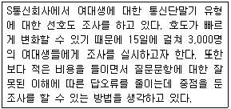
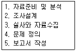
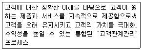
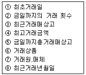

텔레마케팅관리사 (2002-12-08 기출문제)
1과목: 판매관리
1. 마케팅에 대한 설명으로 옳지 않은 것은?
- 소비자에게 만족을 주고 이를 통해 기업의 이윤을 추구하는 활동이다.
- 유형품만을 생산자로부터 소비자에게 유통되는 과정에서 수반되는 활동을 총괄하는 것이다.
- 마케팅이란 교환과정을 통하여 인간의 욕구와 필요를 충족시키고자 하는 활동을 말한다.
- 마케팅은 제품과 서비스를 계획하고 그 가격을 결정하며, 이들의 구매 및 소비에 필요한 정보를 제공하고 유통시키는 데 소요되는 조화된 인간활동의 수행이다.
(정답률: 67%)

2. 최근의 유통환경 변화가 마케팅 활동에 미치는 영향을 설명한 것 중 옳지 않은 것은?
- 연령별 인구 구조가 다이아몬드 구조에서 피라미드 구조로 바뀌었고, 고령 인구가 늘어나게 되어 시장전략의 구조가 바뀌었다.
- 소득 및 교육수준이 향상됨에 따라 소비생활이 다양화ㆍ고급화ㆍ개성화되고 생활의 질을 추구하는 방향으로 변화되고 있다.
- 취업주부의 비중이 높아짐에 따라 일괄구매를 선호하고 구매시간도 주로 퇴근후나 주말에 집중되고 있다.
- 소비자 보호운동(consumerism)이 확산됨에 따라 기업이 수행하는 마케팅활동의 사회적 책임이 강조되고 있다.
(정답률: 67%)
3. 데이터베이스 마케팅의 내용에 해당되지 않는 사항은?
- 잠재 고객의 확인 가능
- 고객에게 개별 접근 곤란
- 판매활동으로서 활용도 증대
- 고객과의 관계 관리에 초점을 둠
(정답률: 74%)
4. 제품 수명주기(product life cycle)에 있어서 성숙기의 특징은?
- 원가가 높다.
- 혁신적인 고객이 제품을 산다.
- 경쟁자가 거의 없다.
- 판매가 절정에 이른다.
(정답률: 79%)
5. PR(public relations)에 해당하는 것은?
- 유명한 연예인으로 하여금 TV에서 선전하게 한다.
- 제품에 대한 할인권, 샘플(sample)을 제공한다.
- 맥주회사에서 음주운전 방지를 위한 프로그램을 행한다.
- 제품전시회(trade show)를 연다.
(정답률: 70%)
6. 고객을 분류(시장 세분화)하는 요건 중 옳지 않은 것은?
- 세분 시장별 규모와 구매력을 측정할 수 있어야 한다.
- 세분시장이 적당한 마케팅 커뮤니케이션과 유통경로를 통하여 도달할 수 있어야 한다.
- 세분시장이 비교적 장기간 사업 기회를 제공할 수 있어야 한다.
- 시장세분화는 우선 고객확보가 주목적이므로 수익성이 없어도 상관 없다.
(정답률: 82%)
7. 고객관계 관리(customer relationship management,CRM)에 대한 설명으로 적합한 것은?
- 장기적이라기보다는 단기적인 고객관계 관리이다.
- 고객과의 갈등을 해소하는데 중점을 둔다.
- 고객을 유지하는 것보다는 판매를 성공시키는 데 중점 을 둔다.
- 고객과 협조 신뢰를 쌓아 고객관계를 유지하는 것이다.
(정답률: 82%)
8. 신규 고객의 확보, 시장조사 등 능동적이고 적극적인 텔레마케팅기법을 의미하는 것은?
- Inbound 텔레마케팅
- Outbound 텔레마케팅
- CRM
- Research
(정답률: 85%)
9. RFM(Recency, Frequency, Monetary)모델에 대한 설명으로 옳지 않은 것은?
- RFM의 의미는 가장 최근에 일정기간 동안 자주 많은 액수의 상품을 구매하는 고객이 기업의 입장에서는 가장 가치 있는 고객이라는 것이다.
- RFM 포인트 분석법의 실행을 위한 주요한 노하우는 가장 예측력있는 현실적인 가중치를 알아 내는 것이다
- RFM포인트 분석법을 하기 위해서는 고객과의 거래 기록이 전제되어야 한다.
- RFM 모델은 그 원리가 매우 간단하여 실제 적용 시에는 낮은 반응률을 보인다.
(정답률: 84%)
10. 정보통신망 이용촉진 및 정보 보호 등에 관한 법률 중 개인정보 보호에 관한 내용으로 옳지 않은 것은?
- 개인정보라 함은 성명, 주민등록번호 등에 의하여 당해 개인을 알아 볼 수 있는 부호, 문자, 음성,음향 및 영상 등의 정보를 말한다.
- 정보통신서비스 제공자는 당해 정보의 삭제 등의 요청을 받은 때에는 지체없이 필요한 조치를 취하되 이를 신청인에게 통지할 의무는 없다.
- 정보통신서비스 제공자는 이용자의 개인정보를 수집하는 경우 당해 이용자의 동의를 얻어야한다.
- 정보통신서비스 제공자 등이 타인에게 이용자의 개인 정보의 수집, 취급, 관리 등을 위탁하는 경우에는 미리 그 사실을 이용자에게 고지 하여야 한다.
(정답률: 70%)
11. 남성과 여성의 음성적 차이를 설명한 것 중 여성이 구사하는 언어의 특성은?
- 기복이 심하고 상승어조를 많이 사용한다.
- 사용하는 언어음의 기본 주파수는 20Hz정도이다.
- "쪼금" 과 같은 경음은 사용하지 않는다.
- 남성보다 낮은 소리로 말한다.
(정답률: 72%)
12. 텔레마케팅의 판매단계를 순서대로 나열한 것은?
- 준비 및 대상자 선정 → 텔레마케팅 전개 및 정보제공 →고객니즈 파악 → 상담종료 → 분석과 데이터베이스화
- 준비 및 대상자 선정 → 고객니즈 파악 → 텔레마케팅 전개 및 정보제공 → 상담종료 → 분석과 데이터베이스화
- 분석과 데이터 베이스화 → 준비 및 대상자 선정 →고객니즈 파악 → 텔레마케팅 전개 및 정보제공 → 상담종료
- 준비 및 대상자 선정 → 분석과 데이터 베이스화 →고객니즈 파악 → 상담종료 → 텔레마케팅 전개 및 정보제공
(정답률: 62%)
13. 아웃바운드 텔레마케팅 판매촉진 기획시 고려 사항으로 옳지 않은 것은?
- 단기 및 장기목표를 조화있게 설정한다.
- TV광고, DM발송, 이벤트개최 등의 고비용 판매촉진은 삼가한다.
- 다수의 정확한 고객정보를 확보한다.
- 명확한 판매 포인트를 포착하여 구매행위를 유도할 수 있는 방법을 제시한다.
(정답률: 84%)
14. 아웃바운드 텔레마케팅 판매촉진에 대한 설명으로 옳지 않은 것은?
- 광고, DM, 홍보, 음성을 결합한 인적 커뮤니케이션에 의한 일종의 무점포형 판매 및 서비스 행위를 말한다
- 고객으로부터 걸려온 전화를 판매로 연결시키는 역할을 한다.
- 전화는 물론 다른 판매 수단을 복합적으로 활용한다.
- 고객과의 직접적인 접촉으로 효과적인 고객상담 스킬이 요구된다.
(정답률: 43%)
15. 아웃바운드 텔레마케팅을 통한 판매의 형태로 보기 어려운 것은?
- 제품 및 서비스 상담 - 회원모집, 보험가입
- 계약갱신 - 카드갱신, 잡지 재구독, 보험 계약 갱신
- 기금모집 및 선거홍보 - 정당, 사회단체 후원회 조직지원 전화
- 교체구입 및 업그레이드 구입 권유 - 컴퓨터, 소프트웨어, 카드회원
(정답률: 77%)
16. 데이터베이스 마케팅이 일반 마케팅과의 차이점을 설명한 것 중 옳지 않은 것은?
- 고객과 일대일 관계를 구축한다.
- 시장에서 경쟁력을 확보하고자 한다.
- 쌍방적 의사소통을 할 수 있다.
- 컴퓨터에 의한 데이터베이스의 구축을 전제로 한다.
(정답률: 50%)
17. CRM을 통해 기업이 얻을 수 있는 성과가 아닌 것은?
- 우수고객 유지
- 직원능력개발
- 교차판매
- 비용절감
(정답률: 43%)
18. 텔레마케팅을 실시하기 위한 준비 요소가 아닌 것은?
- 텔레마케터의 교육 및 훈련
- 고객 데이터 베이스 분석 및 전략 수립
- 고객 반응률 분석
- 타매체와의 연결
(정답률: 58%)
19. 데이터베이스가 포함하는 고객정보가 아닌 것은?
- 개인이나 회사의 이름이나 직위
- 신용내역
- 고객에 대한 미래반응
- 과거구매 내역
(정답률: 65%)
20. 기업의 마케팅 활동에 고객 데이터베이스가 필요한 이유가 아닌 것은?
- 고객의 요구에 부합하는 제품 및 서비스를 창조한다.
- 고객을 몇 개의 그룹으로 나누어 집단화된 구매제안만을 할 수 있다.
- 반응을 측정하고 결과를 예측할 수 있게 한다.
- 고객들에게 다가갈 수 있는 독창적인 구매제안을 하게 한다.
(정답률: 79%)
21. 텔레마케팅 활동의 윤리성에 대한 설명으로 적합하지 않은 것은?
- 텔레마케터는 자신의 소속과 이름을 밝힌다.
- 텔레마케터는 고객과의 약속을 철저히 이행한다.
- 텔레마케터는 경쟁회사 및 상품에 대해 부정적 요소를 부각한다.
- 텔레마케터는 고도의 텔레커뮤니케이션 스킬을 익혀야 한다.
(정답률: 87%)
22. 현대마케팅의 특징으로 가장 적당한 것은?
- 생산중심 마케팅
- 고압적 마케팅
- 고객지향적 마케팅
- 관리적 마케팅
(정답률: 75%)
23. CRM의 기본분류 방법으로 프로세스 관점에 따라 분류한 것이 아닌 것은?
- 브랜드(Brand) CRM
- 분석(Analytical) CRM
- 운영(Operational) CRM
- 협업(Collaborative) CRM
(정답률: 73%)
24. 아웃바운드 텔레마케팅을 통한 활용 분야에 해당하지 않는 것은?
- 신상품판매안내
- 계약갱신안내
- 대금회수안내
- 불만처리접수
(정답률: 77%)
25. 소비자 구매행동 중 편의품에 대한 소비자 구매 행동유형에 해당하지 않는 것은?
- 빈번한 구매가 일어난다.
- 구매 계획을 하지 않는다.
- 최소의 노력으로 비교 구매를 하게 된다.
- 쇼핑시에 노력을 많이 한다.
(정답률: 67%)
2과목: 시장조사
26. 사전조사에 대한 설명으로 옳지 않은 것은?
- 마케팅 문제에 대한 사전정보가 적은 경우 전반적인 환경을 파악하기 위한 탐색적인 방법이다.
- 본조사에 앞서 조사방법과 조사과정이 적절한지 등을 검토하기 위하여 실시한다.
- 사전조사는 본조사에서 오차를 줄일 수 있도록 본조사의 40% 정도의 규모로 하는 경우가 많다.
- 표본설계에서 표본 크기를 정하고자 할 때 모분산을 모르는 경우에 이를 추정하기 위해서 실시하도록 한다.
(정답률: 50%)
27. 시장조사의 역할을 가장 잘 설명한 것은?
- 마케팅 자료를 수집ㆍ분석한다.
- 제품생산계획, 재고관리, 인력관리 등의 정보를 제공한다.
- 마케팅 문제를 예측하고 기회를 포착하는 등 의사 결정을 위한 정보를 제공한다.
- 경영의사결정을 평가하기 위한 정보를 제공한다.
(정답률: 54%)
28. 시장조사에 있어서 전화조사는 다른 조사 방법에 비해 개인생활을 방해하기도 하고 조사를 빙자한 상행위라는 비판의 소지가 많다. 그러므로 조사자는 조사를 하는데 있어서 전화조사의 예절에 각 별이 유의해야한다. 전화조사 예절에 대한 옳지 않은 설명은?
- 조사시간은 응답자가 불편을 느끼지 않는 시간으로 정한다.
- 전화면접원은 먼저 자신의 신분과 조사의 목적, 소요 시간을 알리고 질문에 대한 승낙을 받고 조사를 진행한다.
- 전화조사에 의한 확인 보충하는 경우에도 그 상황에 대한 자세한 설명을 하고 허가를 받고 진행한다.
- 시간과 비용을 절약하기 위해, 그리고 많은 응답자 조사를 위해 질문속도를 빠르게 진행한다.
(정답률: 85%)
29. 조사 방법의 비교 순서가 옳게 나열된 것은?
- 자료수집의 유연성이 높은 순서 : 개인면접 - 전화면접 - 우편면접
- 질문의 다양성이 높은 순서 : 전화면접 -우편면접 - 개인면접
- 표본 통제가 높은 순서 : 전화면접 - 개인면접 - 우편면접
- 속도가 빠른 순서: 우편면접-개인면접-전화면접
(정답률: 69%)
30. 자료를 수집할 때 의사소통방법을 이용한 것이 아닌 것은?
- 대인면접법
- 전화면접법
- 우편면접법
- 관찰법
(정답률: 73%)
31. 효과적인 전화조사를 위하여 고려하여야 할 사항이 아닌 것은?
- 응답자가 불편을 느끼지 않는 시간대를 선택한다.
- 전화조사 시에는 경제성을 고려하여 다양한 주제의 질문을 통하여 많은 내용을 조사한다.
- 전화조사시 대체적으로 적당한 통화시간은 5분 이내이며 10개 전후의 문항이 적당하다.
- 전화조사는 중간에 전화가 끊기거나 소음 등에 방해를 받지 않도록 한다.
(정답률: 67%)
32. 전화조사시 가장 바람직한 질문형은?
- 주관식
- 선다형
- 양자택일형
- 5문 2선형
(정답률: 47%)
33. 기록연구에 사용되는 기록의 단위에 해당되지 않는 것은?
- 대 화
- 단 어
- 문 장
- 논 제
(정답률: 43%)
34. 표본을 통해서 모집단의 성질을 정확히 추론하기 위하여 고려할 사항으로 중요하지 않은 것은?
- 모집단 요소들의 동질성 정도
- 표본의 크기
- 표본선정 시기
- 표본조사 예산
(정답률: 17%)
35. 조사진행 과정 중에 사전조사의 결과는 어떤 식으로 활용하는 것이 적당한가?
- 발생할 가능성이 있는 문제점이 확인되었으면 본조사를 진행해도 좋다.
- 문제점이 나타나면 현단계에서 문제점을 수정하고 본조사를 진행하면 된다.
- 문제점이 확인되면 앞의 단계로 돌아가 수정 후 본조사를 진행하면 된다.
- 문제점이 나타나면 앞의 단계로 돌아가 수정 후 다시 사전조사의 과정을 반복한다.
(정답률: 63%)
36. 전화조사의 특성에 대한 설명으로 옳은 것은?
- 응답자와 직접 대면하여야 하므로 시간과 비용의 부담이 크다.
- 자료의 정확성에 비해 조사과정의 속도가 느리다.
- 조사과정의 통제가 용이하다.
- 면접원과 응답자 사이의 신뢰를 형성하여 심층적인 면접을 할 수 있다.
(정답률: 70%)
37. 일반적으로 인과조사에 가장 적절한 조사방법은?
- 관찰조사
- 전화조사
- 설문조사
- 실험조사
(정답률: 42%)
38. 시장조사는 조사방법에 따라 탐색적 조사, 기술적조사, 인과적 조사로 크게 분류할 수 있다. 이중에서 기술적(descriptive) 조사에 해당하는 것은?
- 문헌조사(literature search)
- 사례조사(case study)
- 실험조사(experimental research)
- 횡단조사(cross-sectional analysis)
(정답률: 46%)
39. 전화조사를 통해 자료를 수집할 때 구체적인 조사 대상을 명확히 정해놓지 않고 무조건 연결되어 조사에 잘 응답해주는 사람을 대상으로 조사를 진행하였다. 이 경우 어떤 집단의 의견이 과다하게 포함되는 문제가 발생하겠는가?
- 학생 집단
- 교육수준이 높은 집단
- 60세이상의 연령집단
- 사무직 남자
(정답률: 63%)
40. 조사자는 조사목적이나 자료의 특성에 따라 적합한 자료수집방법을 선택해야 한다. 일반적인 자료 수집 방법의 선택기준이 아닌 것은?
- 필요한 자료수집의 다양성
- 수집된 자료의 객관성과 정확성
- 필요한 자료의 공개와 독창성
- 자료수집과정의 신속성과 비용
(정답률: 55%)
41. 설문지 작성의 모든 단계를 거친 후 설문지가 완성되면, 완성된 설문지를 이용하여 자료의 분석을 효율적으로 하기 위한 코딩에 대한 설명으로 옳은 것은?
- 전산처리에 편리하게 각 항목에 대한 응답을 문자로 표시한다.
- 전산처리에 편리하게 각 항목에 대한 응답을 숫자로 표시한다.
- 설문지 작성 후 응답자의 필요에 따라 숫자로 표시한다.
- 설문지 작성 후 응답자의 필요에 따라 문자로 표시한다.
(정답률: 62%)
42. 표본추출법 중 확률표본추출법의 특성에 해당되는 것은?
- 시간과 비용이 적게 듬
- 인위적 표본추출
- 표본오차의 추정이 가능
- 분석결과의 일반화에 제약
(정답률: 50%)
43. 시장조사의 정의를 설명한 것 중 옳지 않은 것은?
- 시장조사는 매출과 이익을 증가시키도록 도와주는 기법들의 집합이다.
- 시장조사는 경쟁자들과의 매출과 시장점유율에 대한 정보를 수집하는 것이다.
- 시장조사는 제품을 공급하는 공급자의 욕구를 정확히 파악하는 것이다.
- 시장조사는 목표시장으로부터 자료들을 획득하는 것이다.
(정답률: 43%)
44. 텔레마케터가 전화조사를 할 때 응답자가 대답을 회피하거나 답하기를 꺼릴 수 있는 경우가 아닌 것은?
- 응답자가 경험한 적이 없거나 오래되어 기억하기 어려운 경우
- 텔레마케터가 너무 사무적이거나 불친절한 경우
- 합법적인 목적이나 취지가 담긴 경우
- 사회적으로 터부시하는 성(sex)이나 기타 민감한 정보를 질문하는 경우
(정답률: 63%)
45. 인과관계를 규명하는 모형에 포함된 변수에 해당하지 않는 것은?
- 독립변수
- 종속변수
- 대체변수
- 매개변수
(정답률: 47%)
46. 시장조사의 특징으로서 옳지 않은 것은?
- 직감을 통한 조사로 이루어 진다.
- 마케팅 전략수립을 위한 과정이다.
- 현장에서 활용될 수 있는 실용성이 있어야 한다.
- 기초과학을 근거로 한다.
(정답률: 65%)
47. 다음에 설명하는 상황에 부합하는 조사유형은?

- 일대일 면접조사
- 전화조사
- 집단설문조사
- 우편조사
(정답률: 65%)
48. 설문지를 통하여 자료를 수집하기 위한 기본적인 접근방법이 아닌 것은?
- 개인면접법
- 우편조사방법
- 전화조사방법
- 표적집단면접
(정답률: 38%)
49. 설문지의 초안이 완성된 후 조사대상이 되는 모든 계층의 응답자들에게 본 조사가 들어가기 전에 우선 간이조사를 실시하여 미리 문제점이 무엇인지 파악해 보는 절차를 무엇이라 하는가?
- 일차조사
- 실험조사
- 사전조사
- 부분조사
(정답률: 75%)
50. 다음 시장조사의 과정을 올바른 순서대로 나열한 것은?

- 4-2-3-1-5
- 1-2-3-4-5
- 2-3-1-4-5
- 4-1-2-3-5
(정답률: 36%)
3과목: 텔레마케팅관리
51. 콜센터 리더가 갖추어야 할 역량과 가장 거리가 먼 것은?
- 업무능력
- 상담원 동기부여 능력
- 인력관리능력
- 서류정리 및 컴퓨터 활용능력
(정답률: 64%)
52. 콜센터 구성 장비 중 ACD(Automatic Call Distributor)란?
- 미리 녹음된 메시지를 고객에게 내보내고 고객은 전화기 버튼을 눌러서 정보를 입력하거나 선택을 하게 하여 자동화된 상담 업무를 가능하게 하는 장치
- 콜센터에 걸려온 전화를 정해진 규칙에 따라 적절한 상담원에게 연결시켜 주는 자동 호(CALL)분배 시스템
- 컴퓨터를 통해 전화 통화를 자동으로 제어하도록 하거나 전화를 통해 입력된 데이터를 바탕으로 컴퓨터에 저장된 고객 정보를 자동으로 찾아주는 시스템
- 고객과 상담원의 통화 내용을 자동으로 녹음하는 장치
(정답률: 85%)
53. 텔레마케터가 교육받아야 할 내용 중 가장 거리가 먼 것은?
- 적극적이고 긍정적인 사고의 함양
- 표현 및 대화능력
- 제품 및 서비스 지식
- 통화품질의 분석 능력
(정답률: 75%)
54. 교육 프로그램 개발시 사전에 알아야 할 정보로서 가장 거리가 먼 것은?
- 나이, 성별 등 일반사항
- 신체적 특성
- 지적ㆍ인지적 특성
- 상담원들이 안고 있는 문제점
(정답률: 60%)
55. 텔레마케팅 관리에 대한 설명 중 옳지 않은 것은?
- 텔레마케터의 능률이란 단위시간 내에 얼마만큼 매출을 올릴 수 있고 얼마만큼의 콜을 처리할 수 있는 지를 의미한다.
- 생산성을 올리기 위해서는 적합한 환경 조성과 아울러 인센티브가 많이 이용된다.
- 콜센터의 통신비,설비비 중에서 통신비는 고정비이므로 통신비의 효율적인 관리가 텔레마케팅의 생산성을 결정한다.
- 텔레마케팅의 생산성관리란 개인별 통화수, 매출액, 소요시간 등의 데이터를 관리하는 것을 의미한다.
(정답률: 70%)
56. 일반적으로 신입 텔레마케터의 교육 과정에 포함되는 내용이 아닌 것은?
- 전화 예절
- 경청 방법
- 호흡 및 발성
- 원가 계산
(정답률: 72%)
57. 아웃바운드 콜센터에서 상담원 개인별 성과를 나타내주는 양적 지표로 볼 수 없는 것은?
- 시간당 통화콜수(CPH)
- 시간당 성공콜수(SPH)
- 1인당 매출액
- 평균통화대기시간(Average Queue Time)
(정답률: 39%)
58. 인바운드 콜센터 보다 아웃바운드 콜 센터에 반드시 필요한 인력은?
- 수퍼바이저
- 리스트 관리자
- 교육 담당자
- 채용 담당자
(정답률: 50%)
59. 아래에서 설명하는 것은?

- CRM(Customer Relationship Management)
- IT(Information Technology)
- Integrated Marketing
- Direct Marketing
(정답률: 65%)
60. 다음 마케팅 개념 중 텔레마케팅과의 연계성이 가장 적은 것은?
- 릴레이션쉽 마케팅
- 데이터베이스 마케팅
- 1 : 1마케팅
- 세그먼트 마케팅
(정답률: 54%)
61. 텔레마케팅의 관점별 구분으로 옳지 않은 것은?
- 대상고객에 따른 분류: B to B, B to C
- 발신주체에 따른 분류: 인바운드 텔레마케팅, 아웃바운드 텔레마케팅
- 콜센터 규모에 따른 분류: CTI 콜센터, CRM 콜센터
- 수행 주체에 따른 분류: 사내텔레마케팅(In house), 외부대행 텔레마케팅(Outsourcing)
(정답률: 63%)
62. 모니터링의 목적으로 부적합한 것은?
- 텔레마케터의 교육
- 서비스 품질관리
- 평가결과에 따른 인사조치
- 고객욕구 파악
(정답률: 42%)
63. OJT의 방법 중 현장 코칭시 바람직하지 않는 것은?
- 잘못된 내용은 바로 알려준다.
- 코칭시간은 1분 내외로 한다.
- 잘한 내용은 공개적으로, 잘못한 내용은 비공개로 한다.
- 현장에서 즉시 알려준다.
(정답률: 20%)
64. 텔레마케팅의 도입효과로 볼 수 없는 것은?
- 상품,서비스 홍보 효과
- 고객 서비스 향상
- 매출액 증대
- 면대면 서비스의 강화
(정답률: 58%)
65. 텔레마케팅에 대한 설명으로 가장 옳은 것은?
- 텔레마케팅은 단방향으로 이루어지는 공감적인 커뮤니케이션 기법이다.
- 텔레마케팅은 고객의 생애가치보다는 현재가치를 더 존중하는 기법이다.
- 텔레마케팅은 1:1 마케팅이며, 관계마케팅이다.
- 체계적으로 정비된 데이터베이스가 없어도 텔레마케팅 팅이 달성하고자 하는 목표의 성취를 기대할 수 있다
(정답률: 70%)
66. 다음은 고객리스트에 포함되어 있는 자료들이다. 이 중 인구통계적 데이터에 해당되지 않는 항목은?
- 주택임대상황
- 생활정도
- 주문상품
- 직업
(정답률: 74%)
67. 팀의 활동(행동)원칙을 결정할 때 고려해야 할 사항으로 가장 거리가 먼 것은?
- 최소한 팀원의 3분의 2이상은 팀의 행동원칙을 확실히 이해하고 명확히 알아야 한다.
- 행동원칙은 보통 팀이 다루는 업무, 결정사항, 문제점에 관한 것이 많다.
- 주위환경의 변화를 충분히 고려한 탄력적인 행동원칙이 되어야 한다.
- 행동원칙을 결정할 때 허황되고 실현가능성이 희박한 것은 배제하는 것이 좋다.
(정답률: 50%)
68. Web 콜센터와 가장 거리가 먼 것은?
- 텍스트 채팅
- 화상 채팅
- 웹 에스코팅
- 리모트 콜센터
(정답률: 47%)
69. 스크립트 작성 시의 유의사항으로 옳은 것은?
- 고객 또는 마케팅 상황에 맞게 고정화하여 활용한다.
- 전체의 흐름 중에 클라이맥스를 눈에 띄게 작성한다.
- 전문용어를 자주 사용하는 것이 좋다.
- 상품설명은 가급적 길게 하는 것이 좋다.
(정답률: 38%)
70. 텔레마케팅의 조직구성을 위해 필요한 요소가 아닌 것은?
- 텔레마케터
- 수퍼바이저
- 교육훈련담당 관리자
- 시설물 담당 관리자
(정답률: 72%)
71. 텔레마케팅에서 데이터베이스의 관리는 RFM의 원칙에 의해 관리되어져야 한다. 다음 항목 중 M에해당하는 것끼리 바르게 묶인 것은?

- ②,⑤
- ③,④,⑤
- ①,②,⑧
- ⑥,⑦
(정답률: 37%)
72. 콜센터 리더의 역할로 맞지 않은 것은?
- 정보제공자
- 정보수집자
- 동기부여자
- 대행자
(정답률: 60%)
73. 텔레마케팅 적용분야 중 업무의 복잡도가 가장 큰 분야는?
- 주문 처리
- 고객 서비스
- 판매 지원
- 고객 관리(CRM)
(정답률: 64%)
74. 잘 운영되는 콜센터의 특성으로 가장 적절하게 설명된 것은?
- 텔레마케터들이 지지하는 문화를 가지고 있다.
- 계산ㆍ측정되는 통계자료가 없다.
- 모니터링의 교육기간이 한정되어 있다.
- 행동시간이 통제된다.
(정답률: 62%)
75. 아웃바운드(Outbound) 텔레마케팅이란?
- 회사에서 고객에게 전화를 걸어서 전개되는 텔레마케팅
- 회사 내부가 아니라 외부장소에서 이루어지는 텔레마케팅
- 기존 고객이 아니라 신규 고객을 대상으로 이루어지는 텔레마케팅
- 회사에서 직접하지 않고 외부에 의뢰하여 이루어지는 텔레마케팅
(정답률: 55%)
4과목: 고객응대
76. 효과적인 커뮤니게이션 방법이 아닌 것은?
- 타인의 관점에서 이해한다.
- 폐쇄적 태도로 피드백을 주고 받는다.
- 적극적인 경청의 자세를 유지한다.
- 예상되는 장애물을 의식한다.
(정답률: 67%)
77. 평균적으로 고객과 대화시 말하는 속도로 적당한 것은?
- 1분에 50~100 낱말
- 1분에 100~150 낱말
- 1분에 150~200 낱말
- 1분에 200~250 낱말
(정답률: 50%)
78. 전화응대시 기본응대 자세로 가장 바람직하지 않은 것은?
- 신 속
- 정 확
- 명 랑
- 정 중
(정답률: 54%)
79. 인바운드 고객 상담은 신속한 고객 응대를 위해 다양한 기술을 많이 활용하게 된다. 인바운드 고객 상담을 위해 많이 사용되는 컴퓨터통신 통합기술(CTI 기술)이 현재 제공하는 기능이 아닌 것은?
- 전화 건 사람의 전화 번호 인식
- 컴퓨터를 통한 전화 걸기
- 고객에 대한 정보를 불러 와서 스크린에 보여주기
- 고객의 성향에 대한 분석 기능
(정답률: 54%)
80. 고객 특성에 따른 응대법으로 적당하지 않은 것은?
- 과장되게 말을 잘하는 사람은 콤플렉스를 감추고 있는 사람으로 어디까지가 진의인지 파악하고 말보다 객관적인 자료로 대응한다.
- 빈정거리기를 잘 하는 사람은 열등감과 허영심이 강한 사람이므로 자존심을 존중해 주면서 대한다.
- 생각에 생각을 거듭하는 사람은 신중하나 판단력이 부족하므로 먼저 결론을 내는 화법이 좋다.
- 말의 허리를 자르는 사람은 이기적 성격의 소유자로 반론하지 말고 질문식 설득화법으로 대응한다.
(정답률: 34%)
81. 고객 불만 처리에 대한 설명으로 옳지 않은 것은?
- 고객 불만을 잘 처리하면 고객유지율이 향상된다.
- 고객 불만을 처리하기 위해 드는 비용은 장기적으로 볼 때 기업의 이윤을 감소시킨다.
- 고객 불만 처리 결과는 기업의 경영을 위해 유용한 자료가 된다.
- 고객 불만 처리를 잘 하면 기업의 대외적 이미지를 향상시킬 수 있다.
(정답률: 75%)
82. 훌륭한 고객서비스의 모델이 되는 방법으로 적당하지 않은 것은?
- 경청하는 자세를 배운다.
- 바람직한 전화예절을 활용한다.
- 고객들에게 자주 감사의 뜻을 전한다.
- 자신의 감정을 솔직히 터뜨린다.
(정답률: 75%)
83. 텔레커뮤니케이션의 특징을 바르게 설명한 것은?
- 오감을 통해 상대방의 상태를 파악한다.
- 시간ㆍ공간ㆍ주제가 제한적이다.
- 융통성이 많다.
- 친밀감 형성이 쉽다.
(정답률: 29%)
84. 커뮤니케이션의 과정에서 전달과 수신 사이에 발생하며 의사소통을 왜곡시키는 요인을 의미하는 것은?
- 잡음(noise)
- 해독(decoding)
- 피드백(feedback)
- 부호화(encoding)
(정답률: 58%)
85. 효과적인 커뮤니케이션 방법으로 적당한 것은?
- 일반화된 약어를 사용한다.
- 전문지식을 화제로 선택한다.
- 개인의 주관적인 생각과 감정을 전달한다.
- 적극적 경청을 통하여 고객의 욕구를 파악한다.
(정답률: 70%)
86. 다음 중 고객의 숨겨진 느낌과 의도를 바르게 이해하고 이에 따른 적절한 응대가 아닌 것은?
- "(크고 거친 음성으로) 죄송하다고만 하면 다요 ?" → 아직 사과의 정도가 부족하거나 다른욕구가 있으므로 진심으로 사과하고 또 다른 욕구를 파악한다.
- "저는 청구서,안내문 등 모든 서류를 직장으로 받게되어 있지요?(확인하듯 끝을 올리며)" → 청구서를 받지 못해 화를 내고 있으므로 바로 사과한다.
- " 그 방법뿐입니까?" → 다른 방법이 있는지 없는지를 알고자 하는 표현이 므로 다른 방법이 있다면 그 내용도 제시한다.
- " 가상계좌요?(끝을 올려 묻는 억양으로)" → 의미가 생소하거나, 충분히 이해하지 못했음을 나타내는 표현이므로 다시 한번 더욱 쉽게 설명한다.
(정답률: 72%)
87. 고객과의 커뮤니케이션을 효율적으로 하기 위해 사용하는 화법으로 부적절한 것은?
- 전달 내용을 복창 확인한다.
- 가급적 전문용어를 사용한다.
- 고객의 발언을 인용한다.
- 결론과 요점을 먼저 전한다.
(정답률: 50%)
88. 공감대 형성을 위한 화법에 관한 설명으로 거리가 먼 것은?
- 고객과의 공감을 형성하는 데 도움을 주는 공통화제를 선정하는 것이 중요하다.
- 고객의 신분에 맞는 존칭어를 사용한다.
- 고객을 진심으로 칭찬한다.
- 전체 상담의 원활한 진행과 분위기를 위해 고객의 대화를 무조건 끝까지 듣는다.
(정답률: 63%)
89. 대인커뮤니케이션의 구성 요소로 맞지 않는 것은?
- 상품과 가격
- 발신자와 수신자
- 기호화와 해독
- 메시지와 채널
(정답률: 67%)
90. 호감가는 전화 커뮤니케이션 방법으로 가장 옳은 것은?
- 전문용어의 사용
- 응대시간 단축을 위한 생략된 표현
- 개괄적인 언어 표현
- 감정이입된 응대어
(정답률: 34%)
91. 상담시 상품 혜택을 설명할 때 고려해야할 요소와 거리가 먼 것은?
- Offer(제안)
- Feature(기능)
- Advantage(장점)
- Benefit(혜택)
(정답률: 73%)
92. 불평불만 고객의 심리로 올바르지 않은 것은?
- 비이성적으로 표현하며 거친 말투를 사용한다.
- 회사의 방침이나 제품에 관심이 많다.
- 요구조건은 없지만 담당자와 얘기하고 싶어한다.
- 자신의 의견이 존중받길 원한다.
(정답률: 34%)
93. 고객 응대와 가장 관련이 있는 용어는?
- 시장조사
- 불만처리
- 방문판매
- 미수금 회수
(정답률: 74%)
94. 불만고객 응대시 가장 바람직한 태도는?
- 고객의 잘못을 말해준다.
- 고객의 말을 끝까지 듣는다.
- 회사와 동료의 입장을 옹호한다.
- 고객이 너무 화를 내면 일단 피한다.
(정답률: 77%)
95. 성공적인 텔레마케팅 활동이 되기 위해 미리 준비해야 할 사항으로 옳지 않은 것은?
- 고객정보 입력 및 수정
- 예상질문과 답변
- 적정한 구매 제품의 범위
- 정확한 제품지식과 정보
(정답률: 23%)
96. MOT(고객접점 : Moments of truth)와 관계 없는 내용은?
- 고객과 기업이 접촉하여 그 제공된 서비스에 대해 느낌을 갖는 15초 간의 진실의 순간
- 우리 회사를 선택한 것이 가장 현명한 선택이었다는 사실을 고객에게 입증시켜야 할 소중한시간
- 기업의 생존이 결정되는 순간
- 스위스 항공사의 사장 한셀이 주창
(정답률: 42%)
97. 고객의 전자우편(E-Mail) 문의에 대한 답변시 지켜야 할 일반적인 Rule이 아닌 것은?
- 상대 고객에 상관없이 모든 전자우편(E-Mail)은 제목을 비교적 간단히 하고 통일되게 한다.
- 고객이 원하는 답이 답변 전자우편(E-Mail)원문에 반드시 포함되도록 한다.
- 하나의 전자 메일에 한 주제만 다루도록 한다.
- 컴퓨터 스크린 상에서 읽기 좋도록 형식을 맞추어 보낸다
(정답률: 55%)
98. 인바운드 상담 절차를 옳게 나열한 것은?
- 상담준비 - 전화응답 - 고객니즈 간파 - 문제해결 - 동의와 확인 - 종결
- 상담준비 - 동의와 확인 - 전화응답 - 고객니즈 간파 - 문제해결 - 종결
- 상담준비 - 고객니즈 간파 - 동의와 확인 - 전화응답 - 문제해결 - 종결
- 상담준비 - 문제해결 - 동의와 확인 - 고객니즈 간파 - 전화응답 - 종결
(정답률: 62%)
99. 텔레마케터가 고객응대에서 가급적 사용하지 않아야 하는 말은?
- 감사합니다.
- 사용해 보시고 소개해 주세요.
- 탁월한 선택입니다.
- 잘 모르시는 것 같은데요.
(정답률: 67%)
100. 인바운드 텔레마케팅의 활용 분야는?
- 가망고객 획득
- 고객관리, 휴면고객 활성화
- 해피콜
- 고객의 불만처리
(정답률: 77%)